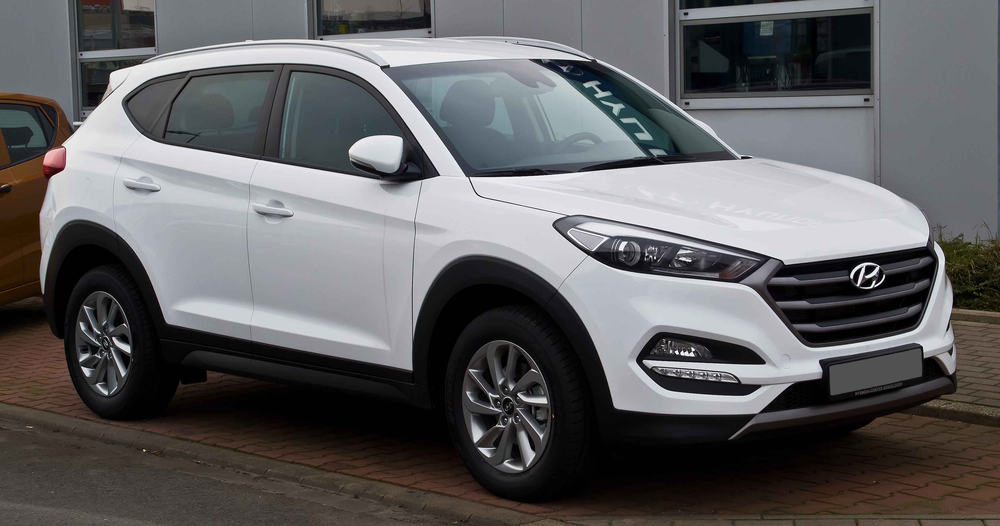

Monovolumen
 Un monovolumen o monoespacio es un tipo de carrocería que tiene el compartimiento del motor, de pasajeros y baúl integrados en una sola unidad, para aprovechar el espacio de manera óptima. Se distingue de un turismo por la mayor altura (generalmente entre 1,60 y 1,80 metros), y porque el capó y el vidrio delantero son prácticamente paralelos, a diferencia de los vehículos deportivos utilitarios como ejemplo. Los compradores de monovolúmenes suelen ser familias numerosas, que precisan utilizar muchas plazas y cargar muchos objetos frecuentemente, o que desean simplemente un vehículo espacioso. La primera generación del monovolumen Renault Espace. Renault Espace V, 2015. Se denomina «monovolumen» en español debido a que el automóvil constituye un único cuerpo, o sea diseño de «una caja» (es decir, el parabrisas y el capó son el mismo ángulo). El motor está alojado de tal manera que sobresale muy poco por delante del eje delantero, y está montado más alto e incluso más inclinado que en un turismo, para liberar espacio en el habitáculo. Según el modelo, los asientos se pueden desenganchar y reenganchar o desplazar sobre carriles, plegar o incluso desmontar. Esta «flexibilidad» permite configurar el interior del automóvil de acuerdo con las necesidades del propietario en cada situación. Todos los monovolúmenes tienen portón trasero, y lo usual es que sea muy vertical para aprovechar el espacio que se perdería si el vidrio trasero estuviera más inclinado.
Origenes
El DKW F89 L, fabricado desde 1949 hasta 1962, fue un diseño monovolumen con sus ruedas delanteras por delante de la cabina de pasajeros, un corto e inclinado capó aerodinámico, tracción delantera, motor transversal, piso de carga plano a lo largo con asientos y alojamiento de carga flexibles - los ingredientes clave de diseño que describen la configuración moderna de «minivan» popularizado en estos ejemplos tan notables como los Renault Espace y Chrysler Voyager/Caravan. Otros precursores de monovolúmenes fueron furgonetas compactas. En 1950, el Volkswagen Tipo 2 adaptó una carrocería en forma de autobús al compacto Tipo 1 (Escarabajo). Se colocó el conductor por encima de las ruedas delanteras, sentado detrás de un «morro plano», con el motor montado en la parte trasera. Este enfoque para el conductor que se coloca en la parte superior del eje delantero se conoce como una «cabina frontal». Las dos puertas laterales con bisagras estaban del lado opuesto al del conductor, con puertas opcionales laterales en el lado del conductor. Fiat construyó un vehículo similar más pequeño; Multipla basado en el Fiat 600 con el mismo concepto de cabina frontal, disposición del motor y el diseño de la puerta. Los fabricantes japoneses y estadounidenses respondieron con furgonetas compactas desde 1960. Por lo general, sobre la base de los autos compactos con motor delantero con un diseño de motor central delantero, el motor fue montado detrás o debajo del asiento delantero y la parte delantera con un morro plano, vertical. Los ejemplos incluyen el Ford Econoline (1961-1967), Chevrolet Van (1964-1970), Suzuki Carry, Toyota Hiace, y Subaru Sambar. Cuando Volkswagen presentó una puerta lateral corrediza en su furgoneta en 1968, entonces tenía todas las características que vendría más adelante a definir un «minivan»: longitud, tres filas de asientos orientados hacia adelante, diseño del portón trasero/puerta trasera con bisagras similar a un familiar, puerta lateral corrediza, y a base de los automóviles de turismo.